今回は、試しに「楽園 池袋店」の「ニューキングハナハナV-30」のデータを分析していこうと思います。
1.まずはダウンロード
こちらからダウンロードしてください。
サイズは60Mくらいです。
アプリケーションはPYTHONで動きますが、
PYTHONやライブラリのインストールや環境設定は必要ありません。
すべて内包してあります。
➤ダウンロード
2.起動する
Exeファイルを開くと、開始画面に映ります。
開始ボタンを押下してください。
台データを見るダイアログが開きます。
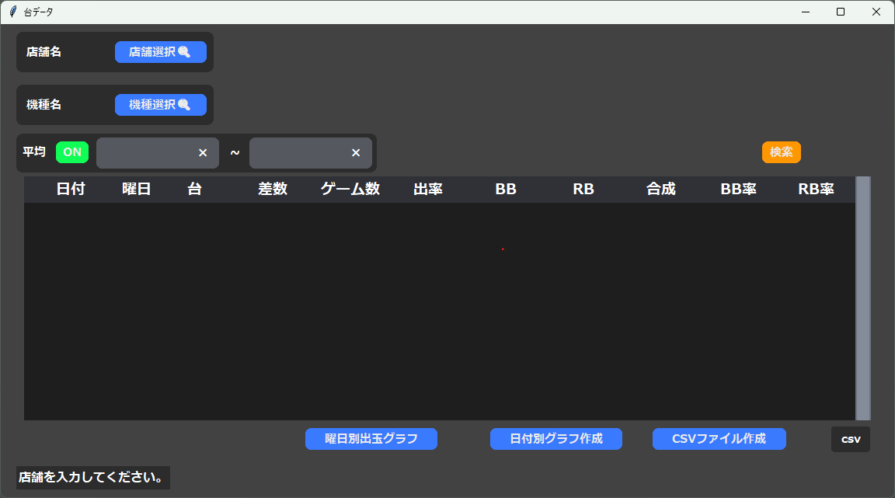
3.店舗情報を取得
まず、店の情報を取得します。
店舗選択ボタンを押下
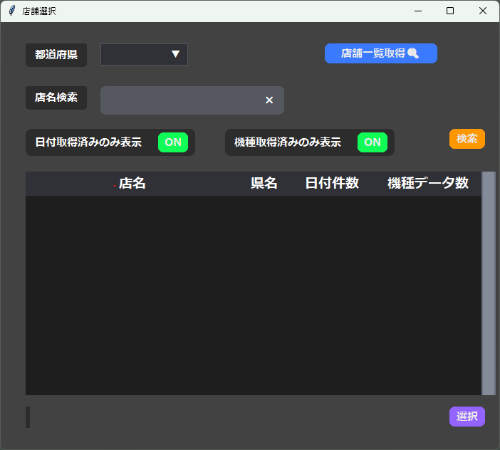
店舗選択画面が開きます。
さらに、店舗一覧取得ボタンを押下します。
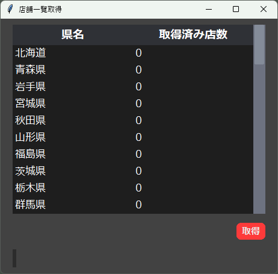
この画面で、店舗を取得していきます。
今回は、「楽園 池袋店」のデータを取得したいので、「東京都」をクリックし、取得ボタンを押下します。
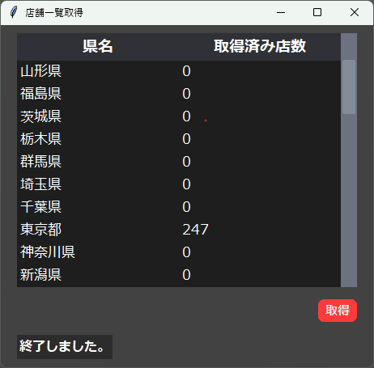
数秒かかった後、247店舗の情報を取得しました。
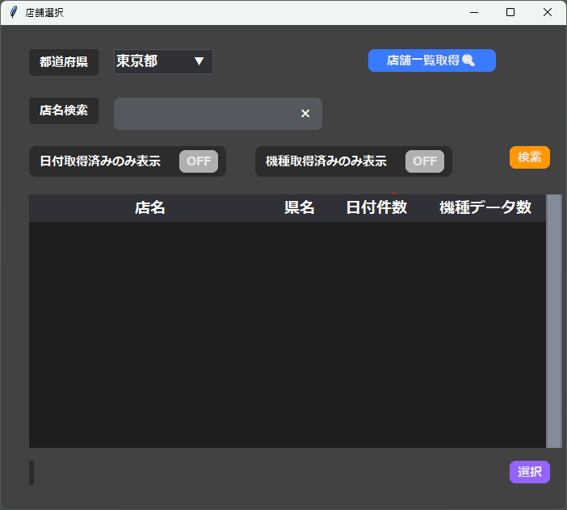
店舗取得ダイアログを閉じ、一個前の店舗選択ダイアログに戻ります。
都道府県を「東京都」にし、「日付取得済みのみ表示」「機種取得済みのみ表示」をOFFにしておきます。
＊この２つについては後で説明します。
検索ボタンを押下します。
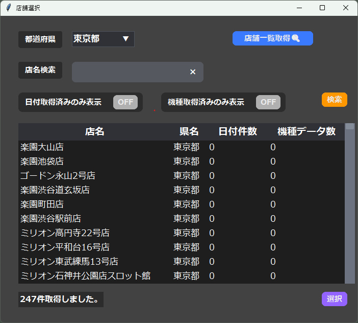
店舗情報が取得されていることが確認できます。
4.日付情報を取得する
店舗一覧のテーブルの中で、データを取得したい店舗をダブルクリックします。
すると、機種選択画面が開きます。
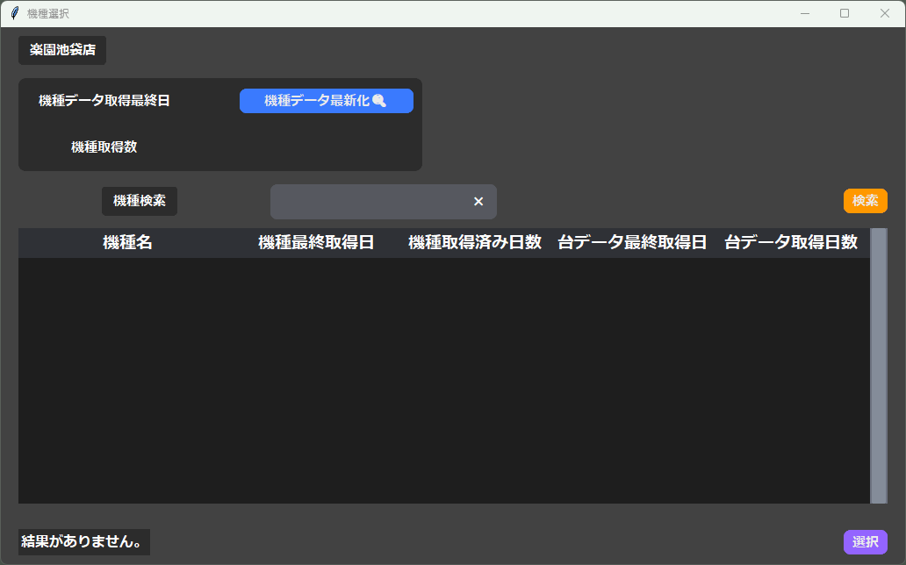
そこから機種データ最新化ボタンを押下します。
すると、機種取得画面が開きます。
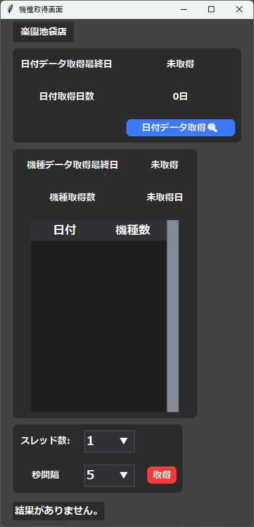
そこからさらに、日付データ最新化ボタンを押下します。
すると日付取得画面が開きます。
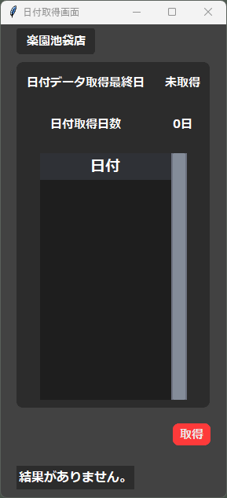
こちらで、その店舗のデータがみんレポに挙げられている日にちをすべて取得します。
みんレポは毎日データが掲載されているわけではないので、その店舗のデータが掲載されている日付と、その日付と結びつく URL用のIDを取得します。
取得ボタンを押下すると、GoogleChromeが２回起動します。
１回目はページ数取得のため、２回目はページ数分の日付のデータを取得するためです
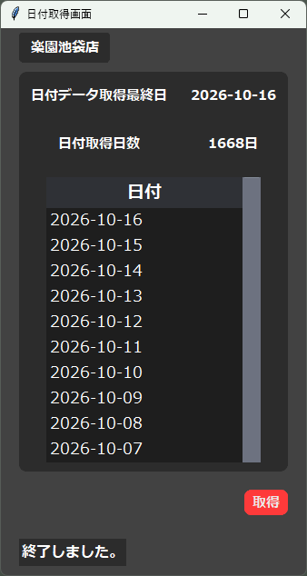
処理が終了すると、ブラウザが自動で閉じ、結果が格納されます。
上のほうを見ると、こちらの店舗は2026/10/16日まで、1668日分掲載されているということがわかります。
＊列をダブルクリックすると、その日付のページが自動的に開く機能もあります。
日付取得ダイアログを閉じ、機種取得画面に戻ります。
5.機種情報を取得する
先ほどの処理で、データを取得したい店舗の、データが掲載してある日付の一覧を取得できたので、
今度は、その日付になんの機種のデータがあるのかを取得します。
スレッドの数 とは、起動するブラウザの数です。
秒間隔 とは、ページを更新する間隔の秒数です。
ブラウザ数が多いほど、秒間隔が短いほど、データを取得するスピードが速くなります。
注意：
大量のアクセスを行い、サーバーに負担をかけるとDOS攻撃になる場合があります！
秒間隔を5秒で指定しておくことをお勧めします。
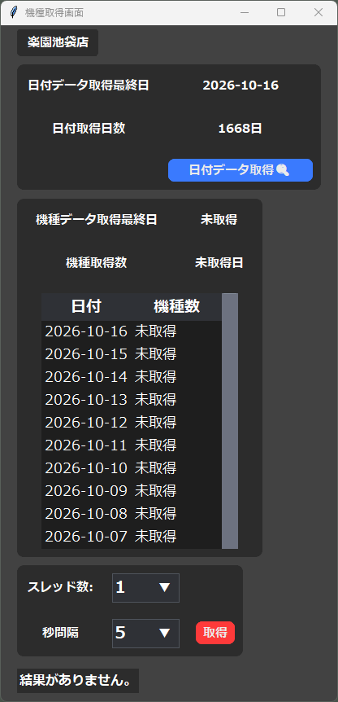
取得ボタンを押下すると、指定したブラウザ数起動し、指定した秒間隔でページを更新します。
すべての日付の機種を取得する必要はありません。
一年程度の機種データを取得したいと思ったら、ブラウザの日付を見て、中止ボタンを押下して途中で止めてしまっても大丈夫です。
中止したまでのデータが、格納されます。
今回は２月ほどページを更新したところで、中止ボタンを押下します。
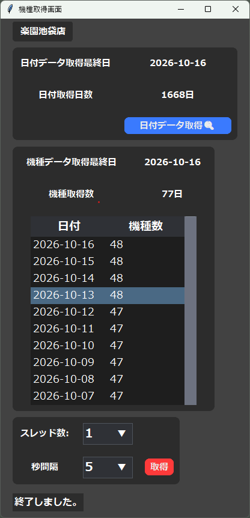
中止ボタンを押下すると、ブラウザが自動で閉じ、データが格納されます。
日付の隣に、その日の機種数が格納されたのがわかります。(バラエティ/１台機種は取得しません)
機種取得ダイアログを閉じ、機種選択画面に戻ります。
6.台のデータを取得する
いよいよ台のデータを取得していきます。
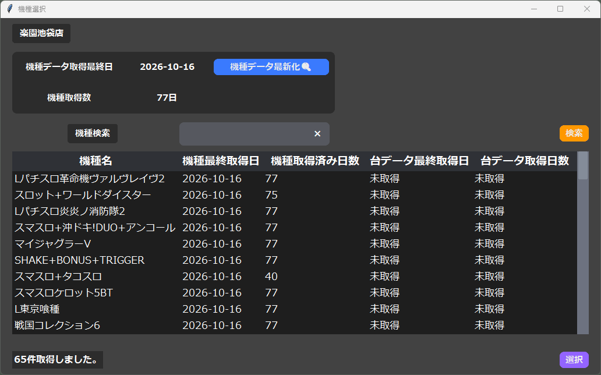
取得したい機種をダブルクリックします。
今回は、「ニューキングハナハナV-30」にします。
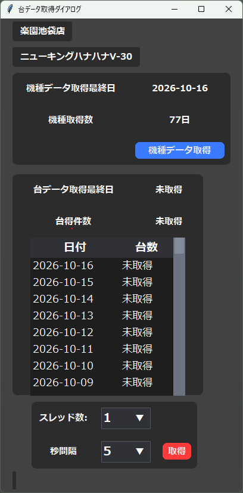
さきほどと同じように、スレッド数と秒間隔をしていします。
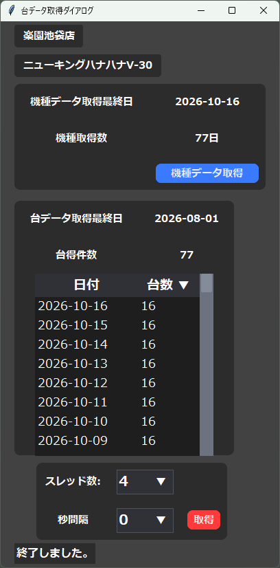
処理が終了すると、ブラウザが自動で閉じ、結果が格納されます。
その日付のデータの台数が表示されますが、「平均」の列も含めた数字となっています。
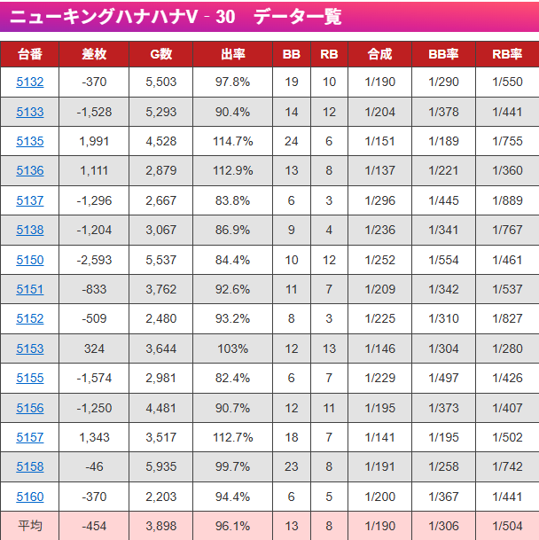
＊15台＋平均
データを取得するという過程は、これにて終了になります。
データを閲覧・分析する過程は、こちら
➤ダウンロード